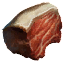
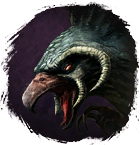

Приманка для Ястреба
Предметы / Ключи
Открыть в интерактивной вики →
| Вес | 1 |
|---|---|
| Цена | 0 |
Описание
Мясо животных, обитающих на поляне, которое позволит заманить Ястреба в его гнездо.
Требуется по (10x - 1 игрок, 6x - 2 игрока, 5x - 3 игрока, 4x - 4 игрока, 3x - 5 игроков) для входа в инстанс Ворлинский Дукат) успешно (1x если не успешно) выполнив ежедневное задание "Сокольница" [ур. 110] у
Ворлинский Дукат) успешно (1x если не успешно) выполнив ежедневное задание "Сокольница" [ур. 110] у  Бедиса
Бедиса
Требуется по (10x - 1 игрок, 6x - 2 игрока, 5x - 3 игрока, 4x - 4 игрока, 3x - 5 игроков) для входа в инстанс

Ястреб. Получить можно во время события на поляне Беирна убивая мобов и специальных мобов элиты . Можно получить 5x (10x доплатив 200xВорлинский Дукат) успешно (1x если не успешно) выполнив ежедневное задание "Сокольница" [ур. 110] у Бедиса| Мясо зверей с поляны, которое позволяет выманить Ястребора в его гнездо. |
Дроп
Применение
|
Способы получения
|